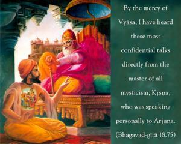
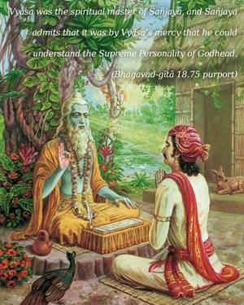
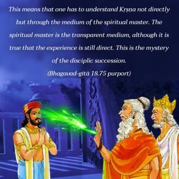

By the mercy of Vyāsa, I have heard these most confidential talks directly from the master of all mysticism, Kṛṣṇa, who was speaking personally to Arjuna.



Vyāsa was the spiritual master of Sañjaya, and Sañjaya admits that it was by Vyāsa’s mercy that he could understand the Supreme Personality of Godhead. This means that one has to understand Kṛṣṇa not directly but through the medium of the spiritual master. The spiritual master is the transparent medium, although it is true that the experience is still direct. This is the mystery of the disciplic succession. When the spiritual master is bona fide, then one can hear Bhagavad-gītā directly, as Arjuna heard it. There are many mystics and yogīs all over the world, but Kṛṣṇa is the master of all yoga systems. Kṛṣṇa’s instruction is explicitly stated in Bhagavad-gītā – surrender unto Kṛṣṇa. One who does so is the topmost yogī. This is confirmed in the last verse of the Sixth Chapter. Yoginām api sarveṣām.
Nārada is the direct disciple of Kṛṣṇa and the spiritual master of Vyāsa. Therefore Vyāsa is as bona fide as Arjuna because he comes in the disciplic succession, and Sañjaya is the direct disciple of Vyāsa. Therefore by the grace of Vyāsa, Sañjaya’s senses were purified, and he could see and hear Kṛṣṇa directly. One who directly hears Kṛṣṇa can understand this confidential knowledge. If one does not come to the disciplic succession, he cannot hear Kṛṣṇa; therefore his knowledge is always imperfect, at least as far as understanding Bhagavad-gītā is concerned.
In Bhagavad-gītā, all the yoga systems – karma-yoga, jñāna-yoga and bhakti-yoga – are explained. Kṛṣṇa is the master of all such mysticism. It is to be understood, however, that as Arjuna was fortunate enough to understand Kṛṣṇa directly, so, by the grace of Vyāsa, Sañjaya was also able to hear Kṛṣṇa directly. Actually there is no difference between hearing directly from Kṛṣṇa and hearing directly from Kṛṣṇa via a bona fide spiritual master like Vyāsa. The spiritual master is the representative of Vyāsadeva also. Therefore, according to the Vedic system, on the birthday of the spiritual master the disciples conduct the ceremony called Vyāsa-pūjā.